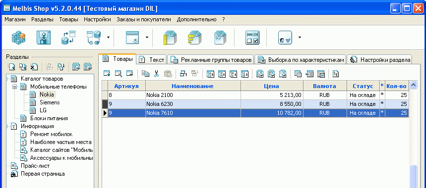
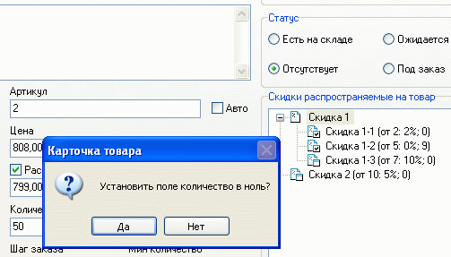

Выбрав раздел типа "Отдел с товарами", можно добавлять в него новый товар, размещать товар, ранее добавленный в другой раздел, редактировать, удалять, копировать для последующего размещения в другом разделе, менять порядок отображения вручную или сортировать автоматически по наименованию или по цене. Можно назначить группе товаров характеристику, параметр, скидку, произвести автовычисления, выполнить импорт/обновление прайса товаров.

Двойным щелчком на товаре можно быстро перейти к его карточке. При изменении в "Общих данных" карточки товара его статуса на "Ожидается" или "Отсутствует" предлагается установить поле "Количество" в ноль:

Возможно вхождение одного товара в несколько разделов. При этом новой карточки товара не создается, и любые изменения, вносимые в карточку товара, приводят к изменениям информации о нем во всех разделах, где этот товар присутствует.
Также возможно выполнение операций с группой товаров. Выделить группу товаров можно, удерживая левую кнопку мыши.
Копирование товара или группы товаров в иной раздел можно осуществить с помощью соответствующих кнопок копирования, перемещения, удаления или перетаскиванием мышью на название раздела при нажатой клавише Ctrl для копирования или Ctrl + Alt для перемещения.
Также, рекомендуем ознакомится с набором клавиш быстрого выделения товаров по определенным признакам в разделе "Горячие клавиши".